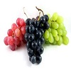

Top Products

Apple
One of the most popular and favorite fruits. An apple a day keeps the doctor away.
Banana
One of the cheapest, healthy and readily available fruits year around.

Grapes
Grapes are widely viewed in many cultures as “the queen of fruits" since earlier times.